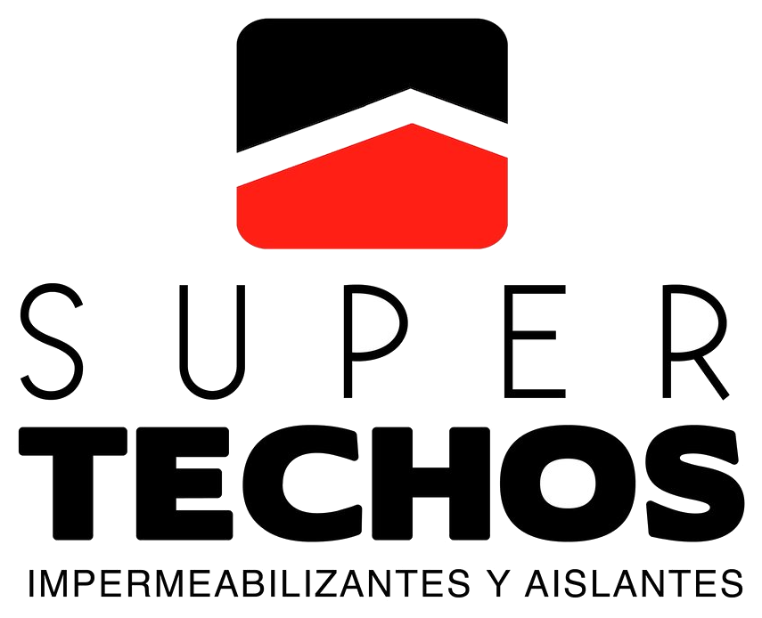

Lo que ya está fabricado manda · derivado del paquete de puertas
Color
Tres colores, sin escalas ni tintes. El negro mate domina; rojo y verde entran
únicamente como acento, casi siempre en la línea corporativa. Cualquier gris que veas en
la documentación es de apoyo — no se corta en vinil.
Negro mate
#111111
Rótulos, pictogramas, lockup, divisores. El color del sistema.
Rojo Super Techos
#D71920
Acento izquierdo de la línea corporativa y de la tira transversal.
Verde Prouco
#8CC63F
Acento derecho. Nunca aparece sin su contraparte roja.
Tipografía — Montserrat
Un solo tipo para todo el sistema. En producción el texto va convertido a curvas,
así que la imprenta nunca necesita la fuente instalada.
Rótulo principal
Bold 700
SALÓN DE REUNIONES
Instrucción
Medium 500
EMPUJE
Apoyo / caps
Medium 500 · 0.16em
CAPACIDAD MÁXIMA 12 PERSONAS
Nota / cota
Light 300
Altura de instalación 1.50 m desde piso terminado
Línea corporativa — el elemento firma
Va siempre debajo del rótulo y es lo que hace que una pieza pertenezca al sistema.
Cota real en puertas: 15 cm rojo + 0.8 cm negro + 15 cm verde, grosor 3 mm. Al
escalarla a otras piezas se mantienen las proporciones, nunca los centímetros.
Proporción fija — 48.7 / 2.6 / 48.7
KITCHENETTE
15 cm
·
15 cm
Lockup y tira transversal
Los dos logos se equilibran por altura de letra, no por altura de caja: el de Super
Techos es apilado y el de Prouco horizontal. El divisor vertical negro es parte del lockup.
La tira transversal cruza todo el ancho con 4 cm de respiro a cada lado del lockup.

Tira transversal · grosor 6 mm
Pictogramas
Lineales, stroke uniforme de 2, esquinas vivas, sin relleno — mismo peso óptico que
Montserrat SemiBold. Siempre en negro mate, centrados sobre el rótulo.
OficinasReunionesKitchenetteAlmacénBañoEléctrico
Reglas de aplicación
Altura de instalación. Centro del letrero a 1.50 m desde piso terminado, en todas las familias.
Zona de exclusión. Nunca vinil sobre tirador ni cerradura: libre 60 × 80 cm alrededor del tirador.
Alineación. Todo centrado al eje vertical del vano o del panel.
Cara de aplicación. Si va por la cara interna del vidrio, el archivo se espeja.
Texto en curvas. Siempre, en todos los archivos de corte, escala 1:1.
Capa azul. Contorno, cotas y herrajes son referencia — la imprenta no los corta.
Instalación. Entre 18 y 30 °C. Limpieza con paño suave, nunca abrasivos.
Verificación. Medir en sitio antes de cortar; ante discrepancia, consultar.